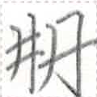

【於】
ie
【於】
ie


occurrences / 出现次数 / 出現回数 : 336
Words containing this character / 包含这个磷字的词语 / この燐字を含む語 :
| ie | 於 | coverb | takes a place / time | at | |
| ie | 於 | coverb | out of (a set) / choosing from (a set) | ||
| tui2 {ie N} | 与 {於N} | verb | to give {to someone} | ||
| ie | 於 | coverb | (indirect object of a verb) | ||
| ut2 {ie N} | 下 {於N} | verb | to descend {to a place} | ||
| aim2 {ie N} | 在 {於N} | verb | to be {at a place} | ||
| ie et2 | 於一 | coverb | for every ... | ||
| zep1 {ie N} | 言 {於N} | verb | to say {to someone} | ||
| ie | 於 | coverb | at {someone's} place | ||
| ie | 於 | coverb | takes a time | during, for | |
| lit1 py {ie N} | 入力 {於N} | verb | to put effort {into N} | ||
| ian1 su1 {ie N} | 生銭 {於N} | verb | to buy {N} | ||
| ie | 於 | coverb | pertaining to this amount of money | ||
| hia1 // xit2 | 心 // 故 {於N} | verb-object compound | to ask {someone} | ||
| ie | 於 | coverb | in such a way | ||
| hia1 kait ie pau1 | 心善於別 | clause-taker | to prefer to | ||
| ie | 於 | coverb | because of | ||
| pua2 aim2 {ie N} | 風在 {於N} | verb | for N to be interesting | ||
| ty sak2 | 再来 {於N} | verb | to return to | ||
| ie | 於 | coverb | compared to | ||
| hia1 kait ie | 心善於 | clause-taking interjection | thank you for | ||
| ho1 ie | 豊於 | verb | to be full of | ||
| ie | 於 | coverb | in {someone's} viewpoint, as for {someone} | ||
| ie nan2 kak | 於何時 | post-verbial / sentence-final particle | how many times | ||
| zep1 ian1 ie | 言生於 | verb | to introduce to {someone} | ||
| tuai2 | 遠 {於L} |  { | verb | to be far {from L} | |
| hia1 put ie | 心真於 | verb | to believe | ||
| lit1 {ie N} | 入 {於N} | verb | to enter {N} | ||
| ie | 於 | coverb | takes a verb | in order to | |
| ie ka1 kak | 於此時 | temporal word | up to now | ||
| sam1 mok1 {ie N} | 急行 {於N} | verb | to hurry to {a place} | ||
| at lit1 | 加入 {於N} | verb | to add {into N} |